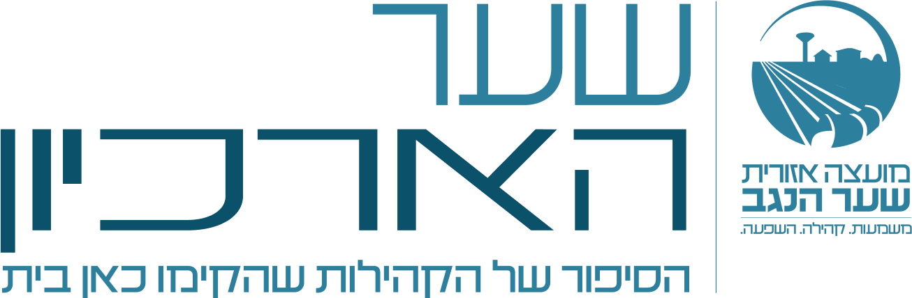

דיו#1F134A
כחול#11769C
שמיים#B3E0EB
זהב#EBAD29
חול#DED6C4
נייר#F4F2EC
פלטת הצבעים מספר המותג
הסיפור של הקהילות
שהקימו כאן בית. כל פריט בארכיון מסודר לפי יישוב ולפי שנה.
COLBO Extended לכותרות ולשנים · Heebo לטקסט רץ
צפייה בסקיצות